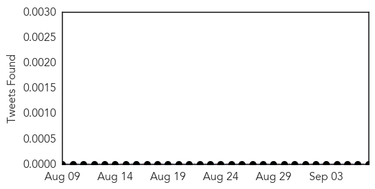
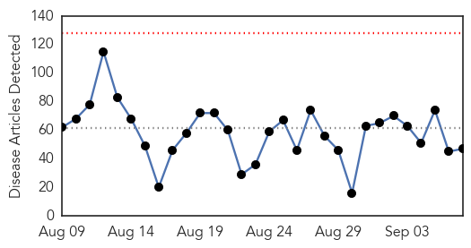
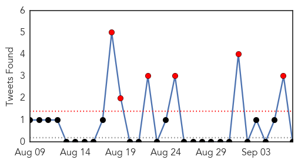

Bubonic Plague
30-Day Web Trend
3 alerts, 3 warnings
30-Day Twitter Trend
0 alerts, 0 warnings

Article Locations

Article Confidences

Top Articles:
-
No articles found for Sep 07, 2015
Top Tweets:
-
No tweets found for Sep 07, 2015
Unknown
30-Day Web Trend
0 alerts, 0 warnings

30-Day Twitter Trend
6 alerts, 0 warnings

Article Locations
Article Confidences

Top Articles:
- 0.994
- Health officials in US on alert over recent spurt in Legionnaires' disease
- 0.994
- Legionnaires' disease deaths are on the rise: CDC
- 0.974
- In Face Of Increasing Cases, Legionnaires’ Disease Is Now A Major Health Issue
- 0.971
- Deadly Legionnaires' Disease Outbreaks in NYC, Illinois and California
- 0.971
- South Korea Will Improve Its Quarantine Facilities by Setting Up a System Dedicated to Monitoring And Response
- 0.967
- Legionnaires’ Disease: Deadly Outbreak In Multiple Cities Across The US
- 0.965
- Deadly Legionnaires’ disease outbreak in California, Illinois & the New York City
- 0.961
- Legionnaire's Disease Is Gaining More Ground in the U.S.
- 0.938
- Flu Symptoms Make Americans Miss Major Life Events
- 0.927
- Salmonella outbreak kills one, sickens hundreds in the U.S.
- 0.895
- Salmonella Linked To Cucumbers
- 0.864
- Dead South Lake Tahoe squirrel tests positive for plague
- 0.860
- Cucumbers imported from Mexico possibly contaminated with salmonella
- 0.849
- Dead South Tahoe squirrel tests positive for plague
- 0.841
- Legionnaires’ disease cases claim five more in Illinois Bulletin Leader
- 0.837
- Glowing in dark, GMO chickens shed the light on bird flu fight
- 0.817
- Get vaccinated against pneumonia, news, Health News, AsiaOne YourHealth
- 0.815
- GMO chickens shed light on bird flu fight
- 0.807
- Glowing in the dark, GMO chickens shed light on bird flu fight
- 0.783
- Mothers, children collateral damage in immigration clampdown
- 0.777
- Ministry of Health raises health concerns post TS Erika - Dominica
- 0.770
- 'Mad cow' fears after man dies in Turin
- 0.752
- Salmonella Outbreak: Simple Ways to Prevent Infection
- 0.733
- BLM confirms Mesa Colorado woman infected with Tularemia
- 0.715
- Minnesota woman sues after contracting salmonella from tainted cucumbers
- 0.713
- Snakebite: A seriously neglected health crisis that kills 100,000 every year
- 0.711
- Health officials develop tool to evaluate potential health impact of pharmaceuticals in environment
- 0.698
- Health officials: Utah man in his 70s dies from plague
- 0.697
- Arklatex - Shreveport, Bossier, Texarkana, Longview, Minden, Natchitoches
- 0.690
- The Caledonian-Record
- 0.685
- Dr. J. Donald Millar, 81, leader of CDC mission that helped eradicate smallpox
- 0.678
- Vaginal Yeast Infection Home Remedies
- 0.663
- San Diego firm recalls cucumbers after salmonella outbreak
- 0.659
- Over 4000 Polio Vaccine Refusal Cases in Pak's Balochistan
- 0.647
- Snakebites: Global health community slithers away from crisis as antivenom runs out
- 0.644
- Global health community slithers away from snakebite crisis as antivenom runs out
- 0.626
- Norovirus-Like Illness Sickens At Least 125 Students, School Officials Say
- 0.612
- Cucumbers Subject To Recall Due To Salmonella As CDC Reports Outbreak In 27 States, One Death Reported
- 0.598
- Louisiana reports 3 cases of Salmonella
- 0.594
- Zimbabwe bans some cattle movement over foot and mouth
- 0.590
- Woman sickened by uncommon Salmonella on cucumbers sues
- 0.576
- ‘Blue-Ear Disease’ Kills More Than 1,000 Pigs in Siem Reap
- 0.571
- The Young Witness
- 0.555
- 3 Louisiana Salmonella Cases Diagnosed
- 0.532
- Latest Political News, Business, Sports News, Entertainment News World News, Features, Video and Infographics
- 0.521
- Drug resistance growing
- 0.504
- Dental hygienists raise e-cigarette concerns
Top Tweets:
- 0.719
- RT: Tengo que apagar un ratito el cosito de pensar en vos, porque me gasta toda la batería.
- 0.641
- RT: ¿Cual es tu finalidad en la vida? - Evolucionar. No quedarme preso en un instante.
- 0.614
- Hay cosas que leo en Twitter que debo aplicar en mi propia vida por el bien de la Humanidad Autoconsejo
- 0.509
- RT: La mayor parte de nuestros sufrimientos mentales vienen de la manera en que nos aferramos a nuestras creencias.